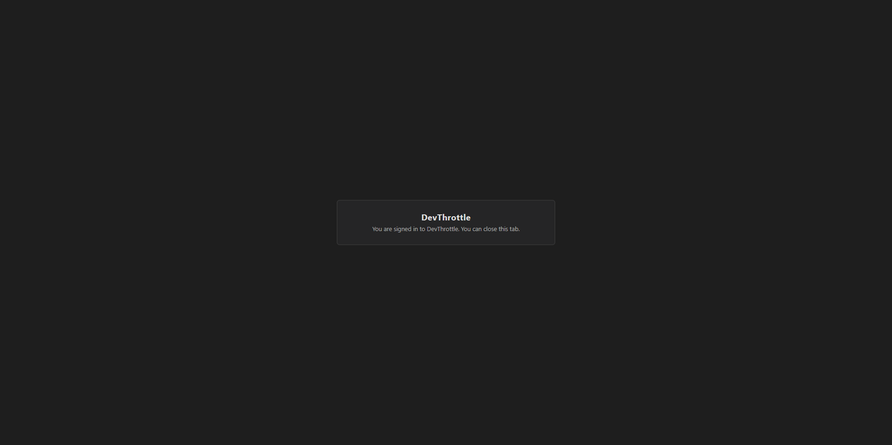

Verified independently in a dedicated detached git worktree checked out at the PR head, built from source
by QA (not the developer's binary). The core security property was proven with a live end-to-end run:
a harness hosting the REAL LoopbackLoginListener from the built Core assembly, the real
devthrottle-dev-signin completion stand-in, and a REAL browser driven through the full
fragment hand-back. Logic paths were verified by building and running the actual unit test suites.
| # | Criterion | Expected | Actual (verified) | Result |
|---|---|---|---|---|
| 1 | No access_token/refresh_token in any callback URL query string on a successful sign-in. |
Callback request URL carries no token query parameters. | Live browser run through the real listener: dev-signin redirected with the token pair in the URL
FRAGMENT only (...#access_token=...&refresh_token=...). Final address bar read from the
browser: location.search = [] (no query), location.hash = [] (fragment stripped
after use). No token ever rode in a server-visible URL. |
PASS |
| 2 | The listener captures the credential via the new shape (request body) and reaches signed-in. | Signed-in state after a new-shape run. | The real LoopbackLoginListener harness returned RESULT=SIGNED_IN with the token
pair captured from the same-origin POST body (access_len=219, JWT prefix eyJ
verified). Gateway wire test Post_Callback_WithTokenPairBody_SignsIn_NoTokenEchoed asserts
IsSignedIn()==true after a body POST. |
PASS |
| 3 | During transition, a callback using the OLD query-string shape still completes (backward compatible). | Old-shape sign-in reaches signed-in. | Core test WaitForCredentialAsync_CapturesBothTokensFromQueryString_Transition and Gateway test
Get_Callback_WithQueryTokenPair_SignsIn_Transition_NoTokenEchoed both pass. |
PASS |
| 4 | A callback without a complete credential fails loud with a user-safe message and stores nothing. | Failure raised; no credential persisted. | Core tests WaitForCredentialAsync_PostedBodyMissingRefreshToken_Throws and
WaitForCredentialAsync_MissingRefreshToken_Throws; Gateway tests
Post_Callback_IncompleteBody_FailsLoud_StaysSignedOut and
Get_Callback_QueryMissingRefreshToken_FailsLoud_StaysSignedOut;
CredentialHandbackPageTests rejects 9 incomplete/malformed bodies. All pass. |
PASS |
| 5 | No token material appears in the Gateway log for either shape (rule DT-05). | Log carries no token. | Code inspection: every FileLog.Write in LoopbackLoginListener and
AccountSignInCallbackEndpoint uses string literals with no token interpolation;
GatewayHost.SafeQueryForLog redacts the callback path's query string
("?[redacted: sign-in callback credential, DT-05]"). Gateway response tests assert no token
echoed in any response body. |
PASS |
| 6 | Unit tests cover new-shape capture, old-shape transition, and incomplete-credential failure; pass in CI. | All relevant tests green. | QA-run results: Core.Tests account suite (LoopbackLoginListener + CredentialHandbackPage) = 17 passed;
Gateway.Tests AccountSignInCallbackEndpointTests = 6 passed. Full solution builds clean
(0 warnings, 0 errors). |
PASS |
dev-signin log:
[dev-signin] GET /signin
[dev-signin] GET /complete
[dev-signin] Completing sign-in (provider=google, email=dev.user@gmail.com)
-> redirecting to loopback callback (token pair in the URL fragment, not the query)
Real LoopbackLoginListener harness:
CALLBACK_URL=http://127.0.0.1:56744/devthrottle-login-callback/
CAPTURED access_len=219 refresh_len=219
ACCESS_PREFIX_OK=True
RESULT=SIGNED_IN
Browser final address bar (read via location.*):
HREF = http://127.0.0.1:56744/devthrottle-login-callback/
SEARCH = [] (no query string -> no tokens on the wire)
HASH = [] (fragment stripped after use, per history.replaceState)
BODY = "You are signed in to DevThrottle. You can close this tab."
Signed-in hand-back page captured live in a real browser:

AuthMiddleware.PublicPaths) exact-matches the callback path and is
method-agnostic, so the new POST is correctly reachable without a Gateway token - same trust boundary as the GET.127.0.0.1 only (DT-07) - covered by CallbackUrl_IsLoopbackOnly.Build succeeded. 0 Warning(s) / 0 Error(s).